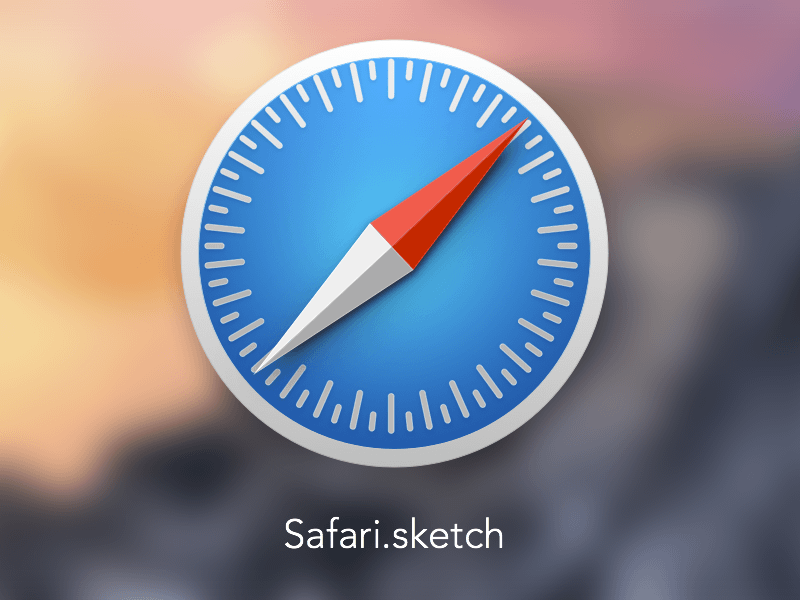

Google Chrome (commonly known simply as Chrome) is a freeware web browser developed by Google LLC.
Mozilla Firefox (or simply Firefox) is a free and open-source web browser developed by Mozilla Foundation and its subsidiary, Mozilla Corporation.

Opera is a web browser for Windows, macOS, and Linux operating systems developed by Opera Software AS.

Safari is a web browser developed by Apple based on the WebKit engine.
Internet Explorer (formerly Microsoft Internet Explorer and Windows Internet Explorer, commonly abbreviated IE or MSIE) is a series of graphical web browsers developed by Microsoft and included in the Microsoft Windows line of operating systems, starting in 1995.